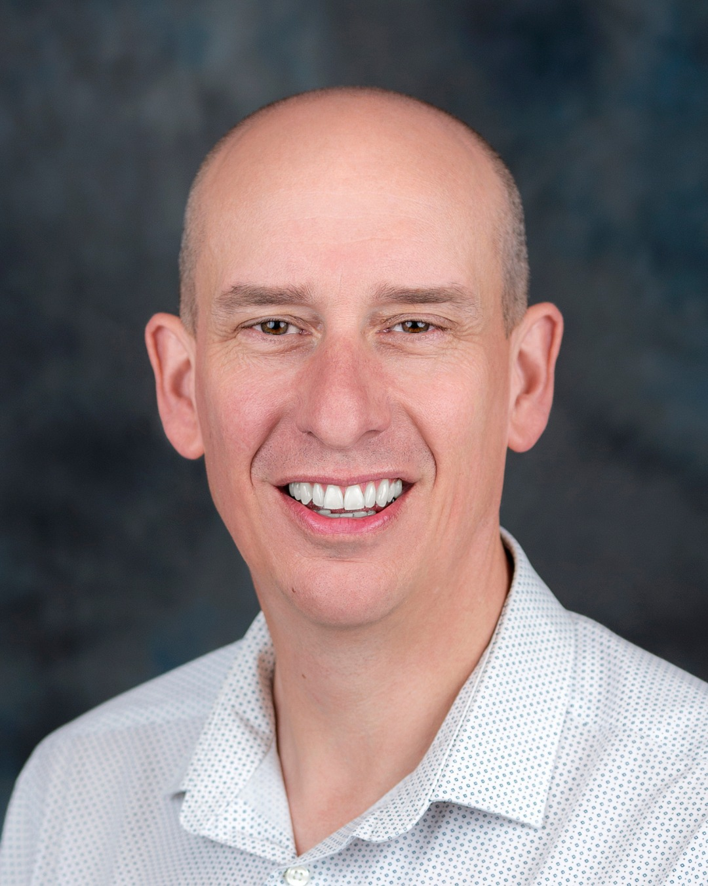
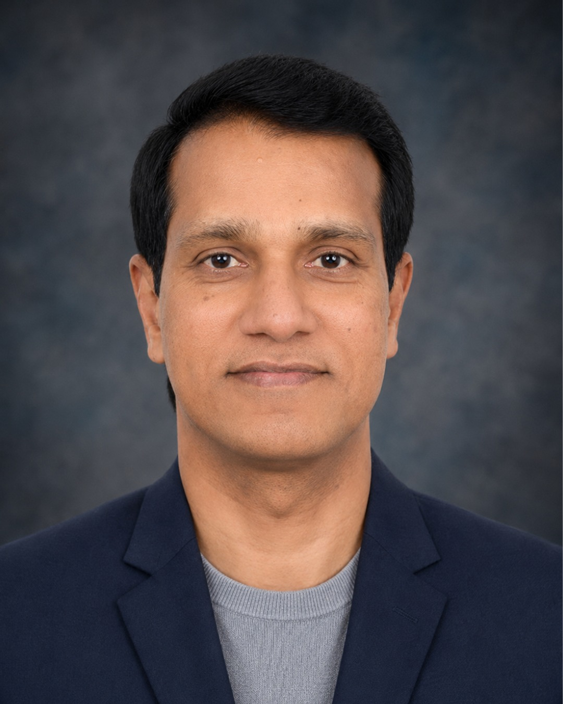
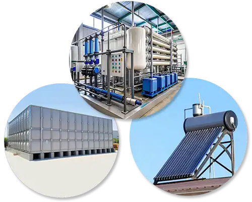
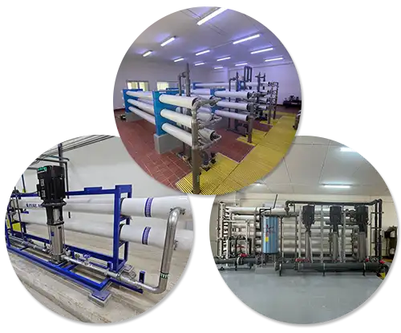
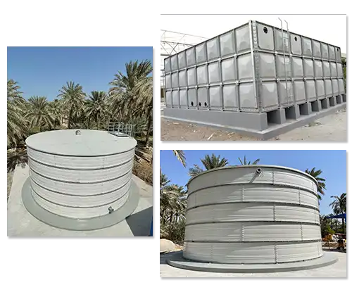
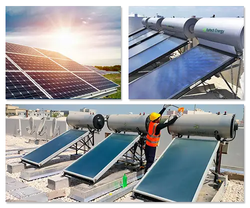
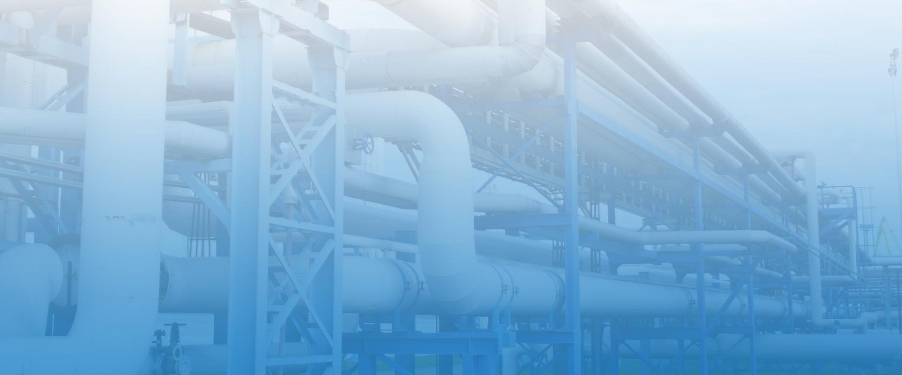

MI Technical Trading Co. W.L.L.
A Bahrain-based engineering company working across water treatment, desalination, wastewater, storage and solar-thermal systems.
Visit MI TechnicalTechnical Seminar & Workshop
Advancing Performance, Reliability and Efficiency in Reverse Osmosis Systems
A focused technical forum on membrane performance, scaling risk and plant efficiency — for the people who run RO systems in Bahrain.
Complimentary attendance
Seats are limited Advance registration required01 / The Partnership
MI Technical Trading hosts the day in Bahrain with American Water Chemicals. AWC brings the membrane-treatment practice; MI Technical provides the local engineering support, as AWC's authorized distributor in the Kingdom.
A Bahrain-based engineering company working across water treatment, desalination, wastewater, storage and solar-thermal systems.
Visit MI TechnicalPerfecting the Science of Membrane Treatment
Specialty chemicals, digital tools and technical services for industrial and municipal membrane systems.
02 / Meet the Experts
Matt Armstrong and Gabriele Brummer of AWC lead the technical sessions. Muhammed PK of MI Technical Trading opens the day.

01Global Sales Director
Global Sales Director
American Water Chemicals
About 30 years in water treatment, with a focus on membrane performance, high-recovery RO, sustainable treatment and chemical optimization. His work is on raising reliability while cutting operating and chemical load.
ExpertiseMembrane performance · High-recovery RO · Chemical optimization
Technical Sales Engineer
European Technical Sales Engineer
AWC Europe
Master of Science in Environmental Engineering, with a focus on reverse osmosis and nanofiltration. International applications work in membrane systems, water chemistry, troubleshooting and treatment optimization.
ExpertiseReverse osmosis · Nanofiltration · Water chemistry

03Managing Director
Founder & Managing Director
MI Technical Trading Co. W.L.L.
A chemical engineer and founder of MI Technical Trading, leading the company's water, desalination and industrial-treatment work in Bahrain since 2008. He opens the day and sets the local plant context for the AWC sessions.
ExpertiseWater treatment · Desalination · Technical engineering

03 / The Event
Built for people who run, design or buy RO systems. The day is a working forum, not a product lecture.
You will work through recovery, scale and fouling, chemical dosage, normalized performance data, pretreatment and cleaning — the decisions that change how a plant runs the following week.
04 / Featured Topics
Each card is a plant problem. Times are the same as the programme.
Get more water out without wearing the membranes out sooner.
Only push for more recovery when the plant can handle it.
Spend less on chemicals and keep the same result.
Set the dose from the water test, before scale starts.
Pick the chemical that matches what is actually on the membrane.
See the real drop in performance, not changes from heat or flow.
Spot trouble early, before the plant has to stop.
Clean the feed water so the RO does less hard work.
Clean the right way to bring flow back — not just clean more often.

05 / Programme
Four technical sessions, then lunch. Sessions 1 and 3 cover optimization, recovery and monitoring. Sessions 2 and 4 cover chemistry, pretreatment, fouling and cleaning.
Muhammed PK, MI Technical Trading
Matt Armstrong, AWC
Gabriele Brummer, AWC Europe
Matt Armstrong, AWC
Gabriele Brummer, AWC Europe
All speakers


06 / Technologies
AWC software, chemistry and support services used in the sessions.
Predictive chemistry software for scaling potential and chemical dosage.
RO monitoring and data normalization that flags performance decline early.
Antiscalants, membrane cleaners and biocontrol products for industrial and municipal systems.
Fouling and scaling diagnosis to choose the right clean and recover more membrane life.
07 / Bahrain Relevance
More than 90% of drinking water in Bahrain comes from desalination. Membrane reliability is part of long-term water security here — the day is built for the plants, utilities and industrial sites that run RO in the Kingdom.
Who Should Attend
The seminar is for people involved in reverse osmosis and water-treatment systems, including:

Register
Attendance is complimentary. Seats are limited. Use the form, or contact the office.
Point your phone camera at the code, or use the button.
Open registration form sales@mitechnical.net +973 1365 4422